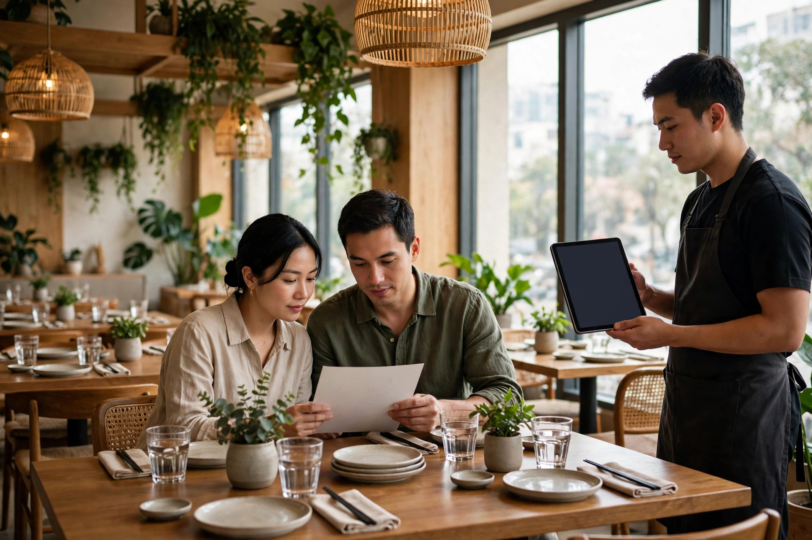

Website cho nhà hàng cần có gì: thực đơn rõ, đặt bàn online, khách quay lại đúng hẹn

Nhân viên nhà hàng đang tư vấn thực đơn cho khách trong nhà hàng — khoảnh khắc quen thuộc trong nhà hàng, và là lý do website nhà hàng phải cho khách tự xem thực đơn, tự chọn bàn và tự đặt bàn mà không cần chờ trả lời tin nhắn.
Tối thứ bảy, nhà hàng của bạn kín bàn từ 18 giờ. Điện thoại bàn reo liên tục, Zalo dồn tin nhắn: “Còn bàn 6 người lúc 19 giờ không?”, “Món cá hồi sốt chanh bao nhiêu tiền?”, “Nhà mình có phòng riêng cho 20 người không?”. Nhân viên lễ tân một tay nghe điện thoại, một tay ghi giấy, vừa ghi vừa sợ ghi nhầm giờ, nhầm số người, nhầm món. Tới 19 giờ, một nhóm khách đặt bàn qua tin nhắn tới nơi thì bàn đã có người ngồi — tin nhắn của họ chìm dưới chục tin nhắn khác, không ai kịp trả lời. Nhóm khách quay ra, bữa tối của họ sang nhà hàng khác.
Cảnh này quen thuộc với nhiều chủ nhà hàng: khách không thiếu, món ăn không dở, nhưng khâu nhận khách vẫn chạy bằng điện thoại và tin nhắn. Khách muốn xem thực đơn, muốn giữ một bàn đúng giờ, muốn biết nhà hàng còn chỗ không — tất cả đều phải qua một người trả lời. Người đó bận thì khách chờ, chờ lâu thì khách đi chỗ khác. Bài này nói rõ một website nhà hàng cần có gì để khách tự xem, tự đặt, tự quay lại mà không cần chờ ai trả lời tin nhắn.
Vì sao nhà hàng đông khách hỏi vẫn mất bàn: ba lỗi quen thuộc
Lỗi thứ nhất: thực đơn nằm trong ảnh chụp và tin nhắn. Khách hỏi giá một món, nhân viên phải mở album ảnh, tìm đúng tấm thực đơn, chụp lại gửi qua. Giá món thay đổi theo mùa thì album ảnh cũ vẫn nằm đó, khách xem giá cũ, tới nơi thanh toán giá mới thì khó chịu. Món hết thì không ai kịp xóa khỏi album, khách gọi món hết, nhân viên lại xin lỗi và gợi ý món khác. Thực đơn kiểu này chỉ đẹp trong tay người chụp, còn khách thì phải lật từng ảnh mới biết nhà hàng bán gì, giá bao nhiêu.
Lỗi thứ hai: đặt bàn qua tin nhắn dễ nhầm giờ, nhầm bàn, nhầm số người. Một tin nhắn “đặt bàn 19 giờ, 6 người” không nói rõ khách muốn ngồi trong nhà hay sân vườn, có trẻ nhỏ hay không, có cần phòng riêng hay không. Nhân viên trả lời “còn bàn” nhưng không ghi vào sổ ngay thì tối đó hai nhóm cùng được hẹn một bàn. Sổ giấy thì chỉ người cầm sổ mới biết, nhân viên ca tối không thấy ghi chú của ca trưa. Nhà hàng đông khách thì sổ giấy rối thêm, và bàn trống hay bàn kín chỉ có một người nắm được.
Lỗi thứ ba: khách không biết nhà hàng còn chỗ hay không trước khi tới. Khách ở xa muốn chắc chắn có bàn mới đi, nhưng website chỉ có địa chỉ và số điện thoại, không có lịch trống theo khung giờ. Khách gọi điện không ai nghe máy vì nhân viên đang bận phục vụ bàn khác, khách nhắn tin thì chờ trả lời. Trong lúc chờ, khách mở sang nhà hàng khác có nút đặt bàn ngay trên web, đặt xong trong một phút. Khách không bỏ đi vì món ăn dở, khách bỏ đi vì không giữ được bàn chắc chắn.
Ba lỗi này có chung một gốc: thông tin về món, giá và bàn trống nằm trong đầu nhân viên và trong tin nhắn, không nằm ở một chỗ khách tự xem được. Website nhà hàng sinh ra để chuyển ba thứ đó ra trước mặt khách: thực đơn rõ giá, bàn trống theo giờ, đặt bàn xong có xác nhận ngay.
7 mục một website nhà hàng thực sự cần có
Một website nhà hàng tốt không phải là một trang giới thiệu đẹp rồi để đó. Bảy mục dưới đây là những thứ khách dùng thật mỗi khi muốn ăn ở nhà hàng của bạn, xếp theo thứ tự khách cần tới chúng.
1. Thực đơn rõ giá theo món và theo combo — khách tự tính được tiền trước khi đặt bàn
Thực đơn trên web phải cho khách thấy từng món kèm giá, ảnh thật của món đó, và ghi chú rõ món cay, món chay, món có hải sản hay đậu phộng để người dị ứng còn tránh. Giá ghi theo món lẻ và theo combo gia đình, ví dụ combo 4 người gồm những món gì, giá bao nhiêu, để khách đi đông tự tính được bữa ăn hết khoảng bao nhiêu tiền trước khi đặt bàn. Món theo mùa ghi rõ “chỉ bán tháng này”, món hết ghi rõ “tạm hết”, khách không gọi phải món không còn. Thực đơn có ô tìm kiếm theo tên món và lọc theo nhóm — khai vị, món chính, lẩu, tráng miệng, đồ uống — khách tìm món trong vài giây thay vì lật cả chục ảnh. Giá thay đổi thì chủ quán sửa một chỗ trên web là xong, không cần chụp lại cả album thực đơn rồi gửi lại cho từng khách hỏi.
2. Đặt bàn online — chọn ngày, chọn giờ, chọn số người và khu vực ngay lúc đặt
Form đặt bàn phải cho khách chọn đủ bốn thứ trong một lần: ngày ăn, giờ ăn, số người, và khu vực ngồi — trong nhà, sân vườn hay phòng riêng. Khách đặt bàn 6 người lúc 19 giờ thì form chỉ hiện những bàn còn trống đúng khung giờ đó, khách không đặt nhầm vào bàn đã có người. Đặt xong, khách nhận tin xác nhận ngay qua Zalo hoặc SMS, kèm mã đặt bàn để tới nơi chỉ cần đọc mã là nhân viên dẫn vào bàn. Khách muốn đổi giờ thì bấm đổi trên link xác nhận, không cần nhắn tin chờ trả lời. Nhân viên nhìn vào bảng đặt bàn trên web là thấy hết các bàn trong ngày, bàn nào đã giữ, bàn nào còn trống, không còn cảnh hai nhóm cùng hẹn một bàn vì sổ giấy chỉ một người cầm.
3. Sơ đồ bàn và trạng thái còn trống theo khung giờ — khách tự thấy còn chỗ mới đi
Nhà hàng khác quán ăn nhỏ ở chỗ có nhiều khu vực ngồi khác nhau, và khách quan tâm mình ngồi ở đâu. Website nên có sơ đồ bàn đơn giản: bàn 2 người, bàn 4 người, bàn 6 người, phòng riêng 20 người, đánh dấu bàn nào còn trống theo từng khung giờ trưa và tối. Khách ở xa nhìn thấy khung 19 giờ còn hai bàn 6 người ở sân vườn thì yên tâm đi, không cần gọi điện hỏi trước. Khung giờ cao điểm hết bàn thì web hiện rõ “đã kín”, gợi ý khung giờ còn trống gần nhất, ví dụ 17 giờ 30 hoặc 20 giờ 30, để khách tự chọn giờ khác thay vì bỏ đi. Mục này cũng là chỗ để ghi rõ nhà hàng nhận tiệc tối thiểu bao nhiêu người, cần đặt trước mấy ngày, để khách đặt tiệc không phải hỏi đi hỏi lại.
4. Đặt món trước khi tới — bếp chuẩn bị sẵn, khách ngồi xuống là có món
Khách đặt bàn xong nên đặt được món luôn trên cùng một trang: chọn món từ thực đơn, ghi chú “ít cay”, “không hành”, “nấu riêng cho trẻ nhỏ”, rồi gửi kèm theo mã đặt bàn. Bếp nhận được phiếu món trước giờ khách tới, chuẩn bị sẵn nguyên liệu, khách ngồi xuống bàn là món bắt đầu lên, không phải chờ gọi món rồi chờ bếp làm từ đầu. Với nhóm đông người hay đặt tiệc, đặt món trước còn giúp bếp tính đúng số lượng, tránh cảnh món này hết giữa chừng, món kia thừa cả mâm. Khách đặt món trước cũng ít hủy bàn hơn, vì họ đã chọn món, đã có mã đặt bàn, bữa ăn đã thành hình trong đầu họ từ lúc còn ở nhà.
5. Thư viện ảnh thật món ăn và không gian — ảnh thật, ghi rõ món nào, góc nào
Khách chọn nhà hàng bằng mắt trước khi chọn bằng miệng, nên ảnh trên web phải là ảnh thật của chính nhà hàng: món ăn bày đúng như khi bưng ra bàn, không gian chụp đúng ánh sáng buổi tối trong nhà hàng. Mỗi ảnh ghi rõ tên món, giá, và món đó có trong thực đơn hôm nay hay không. Ảnh phòng riêng ghi rõ chứa được bao nhiêu người, có màn chiếu hay không, để khách đặt tiệc nhìn là biết có hợp không. Ảnh chụp bằng điện thoại trong lúc nhà hàng đang phục vụ cũng được, miễn là thật — khách tới nơi thấy đúng như ảnh thì tin, thấy khác ảnh thì lần sau không quay lại. Một thư viện mười ảnh thật, cập nhật theo mùa, có giá trị hơn một trăm ảnh stock đẹp nhưng không phải món của nhà hàng.
6. Khách quen đặt lại trong một phút — bấm “đặt lại như lần trước”, chỉ chọn lại ngày giờ
Khách đã ăn ở nhà hàng một lần thì lần sau không muốn điền lại từ đầu. Website nên nhớ bàn khách hay ngồi, món khách hay gọi, để lần sau khách chỉ cần bấm “đặt lại như lần trước” rồi chọn lại ngày và giờ. Khách quen đặt bàn 4 người ở sân vườn, gọi đúng ba món cũ, xong trong một phút, không cần nhắn tin, không cần gọi điện. Kèm theo đó là mục ưu đãi sinh nhật và tích điểm đơn giản: khách đặt bàn sinh nhật được tặng một món tráng miệng, khách ăn đủ mười bữa được giảm một bữa — ghi rõ điều kiện, không úp mở. Khách quen là người mang khách mới tới, nên web phải làm cho việc quay lại dễ hơn việc tìm nhà hàng mới.
7. Nút gọi — Zalo — bản đồ nổi một chạm, kèm giờ mở cửa và địa chỉ rõ ràng
Mọi trang của web đều phải có nút gọi điện và nút nhắn Zalo nổi một chạm, vì vẫn có khách muốn hỏi nhanh một câu trước khi đặt: “phòng riêng có chỗ để xe ô tô không?”, “nhà hàng có nhận khách mang bánh sinh nhật từ ngoài vào không?”. Bấm nút là gọi được ngay, không cần chép số điện thoại rồi mở ứng dụng khác. Bản đồ dẫn đường mở bằng một chạm, chỉ đúng cổng nhà hàng, kèm giờ mở cửa trưa và tối, kèm ghi chú chỗ để xe máy và xe ô tô ở đâu. Khách đi lần đầu không phải gọi điện hỏi đường, tới nơi không phải vòng đi vòng lại tìm cổng. Mục này nhỏ nhưng quyết định khách có tới được nhà hàng hay không.
Nhà hàng của bạn phục vụ khách ăn lẻ hay khách đặt tiệc: hai nhóm cần web khác nhau
Khách ăn lẻ — cặp đôi, gia đình nhỏ 4 người — cần đặt bàn nhanh và xem thực đơn nhanh. Họ quyết định trong vài phút: mở web, xem món, xem giá, thấy còn bàn lúc 19 giờ thì đặt ngay. Với nhóm này, web phải tải nhanh trên điện thoại, thực đơn đọc được ngay, nút đặt bàn nằm ngay đầu trang, không bắt khách lướt qua ba màn hình giới thiệu mới tới được form đặt bàn.
Khách đặt tiệc — sinh nhật, liên hoan công ty, đoàn 20 người trở lên — cần thông tin khác hẳn: phòng riêng chứa được bao nhiêu người, thực đơn tiệc có những mức giá nào, đặt cọc bao nhiêu, cần đặt trước mấy ngày, có được mang bánh từ ngoài vào không. Với nhóm này, web cần một trang riêng về đặt tiệc, ghi rõ từng mức thực đơn tiệc và quy trình đặt cọc, kèm nút nhắn Zalo để trao đổi trực tiếp với người phụ trách tiệc. Hai nhóm này đều vào cùng một website, nhưng mỗi nhóm phải tìm thấy phần của mình trong vài giây, không phải đọc hết cả trang mới biết nhà hàng có nhận tiệc hay không.
Nếu nhà hàng của bạn chỉ là quán ăn nhỏ, ít bàn, không có phòng riêng thì nhu cầu web cũng khác — xem bài riêng về website cho quán ăn để so sánh. Nhà hàng có phòng riêng, có tiệc, có nhiều khu vực ngồi thì bảy mục trên mới là thứ khách cần, và thiếu mục nào khách cũng phải nhắn tin hỏi lại.
Vì sao nên làm web với Web Khởi Nguồn và chi phí thực tế là bao nhiêu
Nghe tới làm website, nhiều chủ nhà hàng lăn tăn một điều: giá rẻ thì sợ web làm qua loa, dùng được vài tháng rồi hỏng, sửa một chữ cũng phải chờ. Mình nói thẳng cơ chế ở đây: Web Khởi Nguồn làm web trọn gói 586.000đ (giá gốc 2.000.000đ) vì quy trình đã đóng gói sẵn — mẫu web nhà hàng có sẵn khung thực đơn, form đặt bàn, sơ đồ bàn, mình chỉ cần thay nội dung, ảnh món và giá của riêng nhà hàng bạn vào, không làm lại từ đầu từng mục. Vì không làm lại từ đầu nên giá thấp, không phải vì bớt tính năng.
Gói 586.000đ đã gồm tên miền, hosting và SSL, web 1–5 trang theo yêu cầu, chuẩn mobile, có giỏ hàng và form đặt hàng — với nhà hàng thì form này chính là form đặt bàn và đặt món — bàn giao trong 1–3 ngày, kèm hướng dẫn sử dụng chi tiết từ A–Z và bảo hành kỹ thuật trọn đời. Làm thử trước, hài lòng mới thanh toán, không cần cọc. Bạn có thể xem chi tiết bảng giá tại Bảng giá, xem gói dịch vụ gồm những gì tại Gói dịch vụ, hoặc nếu cần thêm tính năng riêng cho nhà hàng như đồng bộ với phần mềm quản lý bàn của bạn, hãy xem thêm tại Nâng cấp website. Nếu cần đặt làm web, hãy đặt tại Đặt làm web — đặt trước, dùng thử rồi mới thanh toán.
Một lưu ý thật: web chỉ giải quyết khâu nhận khách và giữ bàn, không thay được món ăn ngon hay phục vụ tốt. Khách đặt bàn dễ mà tới nơi món dở, phục vụ chậm thì lần sau khách vẫn không quay lại. Web làm cho khách tới được bàn của bạn, còn giữ khách ở lại là việc của bếp và của nhân viên.
Cách bạn tự kiểm tra trước khi bỏ tiền làm web
Trước khi chọn bên nào làm web, bạn tự kiểm tra được bằng bốn bước đơn giản. Bước một: mở web mẫu của bên đó bằng điện thoại, bật 4G, xem trang thực đơn tải trong mấy giây, bấm nút đặt bàn xem có tới được form không. Bước hai: đóng vai khách khó tính, đặt bàn 6 người lúc 19 giờ, xem web có chặn khi bàn đã kín không, có gửi mã xác nhận không. Bước ba: đếm số thao tác từ lúc mở web tới lúc đặt bàn xong — quá năm thao tác là khách sẽ bỏ giữa chừng. Bước bốn: hỏi rõ ai sửa giá món khi thực đơn thay đổi, sửa trong bao lâu, có mất phí không. Bên nào trả lời rõ ràng bốn bước này thì bạn yên tâm giao việc, bên nào vòng vo thì bạn nên xem thêm chỗ khác.
Khách sẽ quay lại nếu đặt bàn dễ như nhắn một tin
Quay lại tối thứ bảy đầu bài: nhà hàng vẫn kín bàn từ 18 giờ, điện thoại vẫn reo, Zalo vẫn có tin nhắn. Khác ở chỗ khách đã tự xem thực đơn, tự chọn bàn 6 người lúc 19 giờ ở sân vườn, tự đặt món trước, nhận mã xác nhận rồi tới nơi đọc mã là vào bàn. Nhân viên lễ tân không còn vừa nghe điện thoại vừa ghi giấy, mà nhìn bảng đặt bàn trên web là biết tối nay có bao nhiêu bàn, bàn nào cần chuẩn bị món trước. Nhóm khách từng quay ra vì không giữ được bàn thì giờ đã có bàn chắc chắn trước khi ra khỏi nhà.
Một website nhà hàng tốt không làm cho món ăn ngon hơn, nó chỉ làm cho khách tới được bàn của bạn mà không phải chờ ai trả lời tin nhắn. Khách tới được bàn, ăn ngon, lần sau đặt lại trong một phút — đó là cách nhà hàng giữ khách mà không cần chạy theo từng tin nhắn mỗi tối.
Muốn nhà hàng của bạn có website như vậy?
Xem trước các mẫu demo theo ngành nghề, ưng mẫu nào làm mẫu đó — trọn gói 586.000đ, xem mẫu trước khi quyết định.